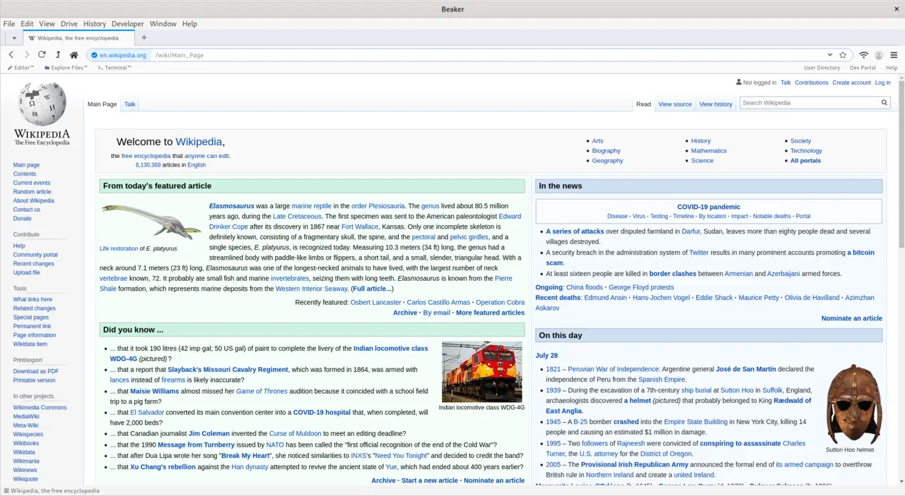

AI 브라우저가 흥미로운 이유는 검색 결과를 잘 요약해서가 아닙니다. 브라우저는 원래 사람이 웹을 다니며 읽고, 비교하고, 입력하고, 결제 직전까지 확인하는 공간입니다. 여기에 AI가 들어오면 질문에 답하는 도구가 아니라 사용자의 손을 대신 움직이는 실행 도구가 됩니다. 검색창에 묻던 일이 탭 이동, 표 비교, 일정 확인, 양식 초안 작성으로 이어지는 순간 브라우저의 성격이 달라집니다.
그래서 AI 브라우저를 볼 때는 모델의 말솜씨보다 권한의 모양을 먼저 봐야 합니다. 사용자가 읽기만 허락했는지, 장바구니에 담기까지 허락했는지, 결제나 예약처럼 외부에 영향을 주는 행동은 어디서 멈추는지 분명해야 합니다. 브라우저 안에는 로그인된 메일, 회사 문서, 개인 결제수단, 업무 도구가 함께 열려 있습니다. 이 공간에서 AI가 편리하다는 이유로 너무 많은 권한을 갖게 되면 작은 실수도 실제 행동으로 번질 수 있습니다.
검색창이 손을 갖는 순간

기존 검색은 링크를 보여 주고 판단은 사용자에게 맡겼습니다. AI 브라우저는 그 다음 단계를 넘봅니다. 가격을 비교하고, 약관을 요약하고, 회의 일정을 맞추고, 입력칸에 초안을 넣는 식입니다. 이 변화는 반복 업무를 크게 줄일 수 있습니다. 여행 일정을 짜거나 후보 제품을 비교하거나 오래된 문서에서 필요한 조항을 찾을 때 사용자는 탭 사이를 오가는 시간을 줄일 수 있습니다.
하지만 손이 생긴 검색창은 책임도 함께 갖습니다. AI가 어떤 페이지를 신뢰했는지, 어떤 조건을 빠뜨렸는지, 사용자의 의도를 어디까지 해석했는지 확인할 수 있어야 합니다. 예를 들어 “가장 저렴한 항공권을 찾아줘”라는 말은 수하물, 환불, 경유 시간, 출발 공항, 결제 수수료를 모두 포함하지 않습니다. AI가 한 가지 기준만 보고 실행하면 사용자는 편리한 대신 맥락을 잃을 수 있습니다.
권한은 버튼보다 작게 나뉘어야 합니다
AI 브라우저의 권한은 단순히 허용과 거부로 나누기 어렵습니다. 읽기, 요약, 비교, 입력, 임시 저장, 외부 전송, 결제처럼 단계가 나뉘어야 합니다. 사용자는 AI에게 “이 사이트를 읽어도 된다”는 권한을 줄 수 있지만 “내 정보를 제출해도 된다”는 뜻은 아닐 수 있습니다. 특히 업무용 브라우저에서는 고객 정보와 내부 문서가 섞여 있기 때문에 권한 단계가 더 세밀해야 합니다.
좋은 AI 브라우저는 행동 직전에 멈출 줄 알아야 합니다. 사용자가 요청했더라도 개인정보를 외부 양식에 넣거나 예약을 확정하거나 댓글을 게시하는 순간에는 확인 절차가 필요합니다. 확인 화면은 귀찮은 장식이 아니라 안전한 실행의 마지막 손잡이입니다. 사용자가 어떤 정보가 어디로 나가는지 한눈에 볼 수 있어야 AI가 대신한 일이 사용자의 통제 안에 남습니다.
업무 흐름은 탭보다 길어집니다
브라우저 업무는 한 페이지에서 끝나지 않습니다. 보고서를 쓰려면 검색, 자료 저장, 표 정리, 메신저 확인, 문서 편집, 메일 발송이 이어집니다. AI 브라우저가 강해질수록 이 흐름을 하나의 작업으로 묶으려 할 것입니다. 사용자는 “지난 분기 고객 불만을 정리해서 회의 자료 초안을 만들어줘”라고 말하고, 브라우저는 여러 시스템을 오가며 필요한 근거를 모을 수 있습니다.
이때 중요한 것은 작업 기록입니다. 어떤 탭에서 어떤 정보를 읽었고, 어떤 문장을 초안에 넣었으며, 어떤 정보는 권한 때문에 제외했는지 남아야 합니다. 기록이 없으면 AI가 만든 결과를 검토하기 어렵습니다. 반대로 기록이 잘 남으면 브라우저는 단순 자동화 도구가 아니라 업무 흐름을 설명하는 장부가 됩니다. 직원은 결과만 보는 것이 아니라 결과가 만들어진 길을 되짚을 수 있습니다.
브라우저의 신뢰는 느린 확인에서 나옵니다
AI 브라우저 경쟁은 빠른 실행을 앞세우기 쉽습니다. 그러나 실제 사용자는 빠른 실패보다 느린 확인을 더 신뢰합니다. AI가 결론을 내기 전에 부족한 조건을 묻고, 출처가 약한 정보는 표시하며, 민감한 행동 앞에서는 멈추는 경험이 반복되어야 합니다. 자동화의 속도는 신뢰가 쌓인 뒤에야 장점이 됩니다.
기업 도입에서는 더 조심스럽습니다. 회사는 브라우저 확장 하나로 내부 정보가 새어 나가는 상황을 원하지 않습니다. 어떤 모델이 페이지 내용을 처리하는지, 데이터가 외부 서버로 나가는지, 학습에 쓰이는지, 관리자 로그가 남는지 확인해야 합니다. 개인용 기능으로는 멋져 보여도 기업 환경에서는 보안과 감사가 제품력의 일부가 됩니다.
AI 브라우저는 검색엔진의 다음 모양이라기보다 웹에서 일하는 방식의 재설계에 가깝습니다. 사용자가 읽는 시간을 줄이는 데서 시작하지만, 결국은 사용자의 이름으로 무엇을 실행할 수 있는지를 묻게 됩니다. 좋은 제품은 더 많은 일을 몰래 해내는 브라우저가 아니라, 더 많은 일을 하면서도 사용자가 끝까지 통제하고 있다고 느끼게 하는 브라우저입니다.
앞으로의 기준은 화려한 데모보다 일상적인 실패 장면에서 드러납니다. AI가 헷갈리는 질문을 받았을 때 멈추는지, 결제 정보 앞에서 확인하는지, 회사 문서와 개인 메일을 섞지 않는지, 사용자가 원하면 작업 기록을 지울 수 있는지 봐야 합니다. 브라우저가 손을 갖는 시대에는 손재주보다 손잡이가 중요합니다.
실제 도입을 검토한다면 가장 먼저 작은 업무 하나를 골라 실험하는 편이 좋습니다. 예를 들어 경쟁사 가격 확인, 채용 공고 비교, 고객 문의 분류처럼 결과가 틀렸을 때 바로 확인할 수 있는 일을 맡겨 보는 것입니다. 처음부터 결제, 계약, 고객 응대처럼 외부 책임이 큰 영역에 연결하면 편리함보다 위험이 먼저 커집니다. 작은 업무에서 출처 표시, 권한 확인, 작업 취소, 기록 저장이 자연스럽게 작동하는지 봐야 합니다.
또 하나의 기준은 AI가 모르는 것을 어떻게 처리하는지입니다. 좋은 브라우저형 도구는 빈칸을 그럴듯하게 채우기보다 질문을 되돌려야 합니다. 로그인하지 않은 페이지, 접근 권한이 없는 문서, 오래된 가격표, 서로 다른 통화와 세금 조건처럼 애매한 재료가 섞일 때 “확인이 필요합니다”라고 멈출 수 있어야 합니다. 사용자가 믿게 되는 순간은 대답이 빠를 때가 아니라, 무리한 실행을 하지 않는 장면에서 만들어집니다.
이 변화는 검색 광고와 콘텐츠 유통에도 영향을 줍니다. 사용자가 여러 페이지를 직접 오가지 않고 AI 브라우저 안에서 비교 결과를 받으면, 사이트는 첫 화면에서 독자를 붙잡는 방식만으로는 부족해집니다. 정보의 원천이 명확하고 가격, 조건, 업데이트 시점처럼 기계가 읽기 쉬운 구조를 갖춘 곳이 더 자주 선택될 수 있습니다. 브라우저가 일을 대신하는 시대에는 사람에게 보기 좋은 페이지와 함께 AI가 오해하지 않는 페이지도 중요해집니다.